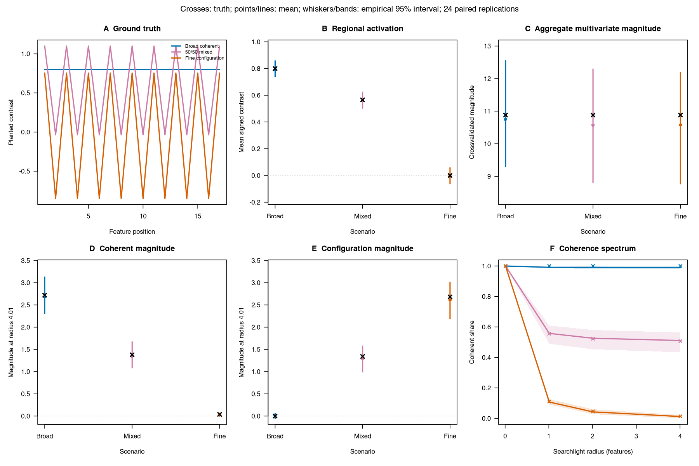

Equal total effects can have different spatial organization
Source:vignettes/matched-interpretability.Rmd
matched-interpretability.RmdRead this example after Reading
contrast energies and RDMs, which introduces total,
coherent, and configuration. Here
scale means the searchlight radius: widening a neighborhood
changes how much of a pattern looks spatially constant within it.
This simulation asks one narrow question: if total crossvalidated contrast magnitude is fixed, can its spatial organization still differ? Three planted patterns have equal total magnitude. One is a constant regional mean, one is a 50/50 mean-plus-alternating mixture, and one is a pure alternating configuration. Every fitted comparison uses the same balanced design and the same Gaussian noise draw within a replication.
The conventional activation comparator is the mean signed regional
contrast. The aggregate multivariate comparator is the average
squared-Euclidean cross-partition contrast magnitude over every
unordered run pair. A comparator is called ambiguous here only when its
truth differs by at most 1e-12 while the
configuration-share spectra differ by at least 0.2 at some
scale.

A: planted patterns. B: regional activation. C: aggregate crossvalidated magnitude. D-E: coherent and configuration magnitude at the widest radius, on a shared y-axis. F: coherent share across scale. Crosses mark analytic truth; points and lines show simulation means; whiskers and bands span the empirical 2.5th-97.5th percentiles.
Read the panels in three steps. A-C establish that the planted patterns differ while total magnitude is held fixed. D-E separate the common spatial mode from its orthogonal remainder at the widest neighborhood. F follows their balance as the neighborhood grows: a voxelwise pattern is entirely coherent within its one-voxel neighborhood, whereas alternating signs increasingly contribute to configuration in wider neighborhoods.
Why do D and E sum to less than C? Panel C reports
the unscaled aggregate magnitude. The four scales in D-F form a
conservative frame family with weight
per scale. Panels D and E therefore sum to one quarter of C: analytic
truth is 2.72 at the widest scale, compared with 10.88 in C. Summing
coherent + configuration over all four scales recovers the
aggregate total. The coherent share in F divides within a scale, so this
common weight cancels.
Panel F also has a different availability rule: a signed crossvalidated estimate need not admit a fraction between zero and one. Its mean and band use the available fractions only, so their replication count can be below 24. They describe the admitted subset, rather than uncertainty over every simulated dataset.
The regional activation panel is a negative control, not a failed comparator: it correctly distinguishes a pure mean effect from a mixed effect. The aggregate magnitude panel is the ambiguous one. Its truth is equal by construction even though the two component panels and the spectrum differ.
| Scenario | Truth | Mean | 2.5% | 97.5% | Replications |
|---|---|---|---|---|---|
| Broad coherent | 10.88 | 10.7508 | 9.3006 | 12.5461 | 24 |
| 50/50 mixed | 10.88 | 10.5700 | 8.8106 | 12.2921 | 24 |
| Fine configuration | 10.88 | 10.5772 | 8.7729 | 12.1814 | 24 |
This is matched-simulation evidence, not a real-data result. The
figure does not establish that a particular brain region is coherent or
configurational, and its intervals show Monte Carlo variation rather
than population coverage. The generator, thresholds, and evidence
boundary are specified in design/matched-interpretability-simulation-contract.md.
To apply this decomposition to your own fitted effects, continue with Conservative frames. It shows how to choose radii, declare scale weights, and read the components without counting overlapping support repeatedly. The neuroim2 workflow shows how to bring image estimates into a geometry plan.